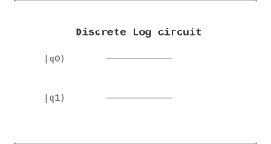

Algorithms / 算法 | 难度：高级 | 预计时间：25 分钟
离散对数问题是密码学的基础，量子算法可以高效求解。
经典算法需要指数时间
对于大数，经典方法效率低
量子算法可以在多项式时间内求解
提供指数加速
是量子密码学的基础
密码学
密钥交换
数字签名
from quonic.algorithms import discrete_log
result = discrete_log(g=2, h=8, p=11)
print(f'x = {result.x}')预期输出：
x = 3
离散对数问题：给定 \(g, h, p\)，求 \(x\) 使得 \(g^x \equiv h \pmod{p}\)。
量子算法：
用 QPE 估计周期
用经典后处理求解
离散对数在有限域上求解，利用量子傅里叶变换提取周期信息。
from quonic.algorithms import discrete_log
# discrete_log(g, h, p)
# g: generator
# h: target value
# p: modulus
result = discrete_log(g=2, h=8, p=11)
print(f'x = {result.x}')from quonic.algorithms import discrete_log
result = discrete_log(g=3, h=27, p=13)
print(f'x = {result.x}')离散对数是许多密码系统的基础。
Diffie-Hellman 密钥交换基于离散对数问题。
都基于周期查找问题，可以用 Shor 算法求解。
指数加速：\(O(\text{poly}(\log N))\) vs \(O(\exp(\sqrt{\log N}))\)。
Shor 算法
量子傅里叶变换
数论
椭圆曲线密码学
后量子密码学
量子密码学
from quonic.algorithms import discrete_log
result = discrete_log(g=2, h=8, p=11)
print(f'x = {result.x}')(https://github.com/ChrisLee0721/QuoNic/blob/main/examples/discrete_log/discrete_log.py)